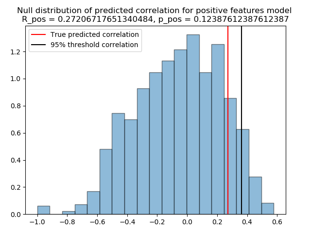
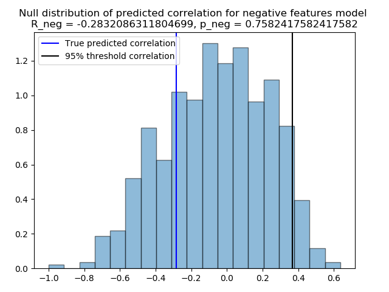

Note
Click here to download the full example code
Connectome Predictive Modelling¶
What you’ll learn: Build a linear model from functional connectivity matrices to predict a continuous behavioral variable.
Author: Dhaif BEKHA
Retrieve the example dataset¶
In this example, we will work directly on a pre-computed dictionary, that contain two set of connectivity matrices, from two different groups. The first group, called controls is a set of connectivity matrices from healthy seven years old children, and the second group called patients, is a set of connectivity matrices from seven years old children who have suffered a stroke. You can download the dictionary use in this example here. In this example we will try to predict a continuous variable from the connectivity matrices. Therefore, you can also download a table , containing one behavioral variable for all subject in the patients group.
Module import¶
import pandas as pd
from pathlib import Path
import os
from conpagnon.utils.folders_and_files_management import load_object
from conpagnon.machine_learning.CPM_method import predictors_selection_correlation, \
compute_summary_subjects_summary_values, fit_model_on_training_set, predict_behavior
from conpagnon.plotting.display import plot_matrix
import numpy as np
from nilearn.connectome import sym_matrix_to_vec, vec_to_sym_matrix
import time
from joblib import delayed, Parallel
import matplotlib.pyplot as plt
Load data, and set Path¶
For this section of the tutorial, we will simply need a set of connectivity matrices, and a continuous behavioral score. Traditionally a score is simply a measure of an individual performance for a particular cognitive task. In our case, for this simple example, this score will be interpreted as the mean performance for a battery of sub-test regarding the language function.
# Fetch the path of the home directory
home_directory = str(Path.home())
# Load the dictionary containing the connectivity matrices
subjects_connectivity_matrices = load_object(
full_path_to_object=os.path.join(home_directory, 'raw_subjects_connectivity_matrices.pkl'))
# Load the data table
data_path = os.path.join(home_directory, 'regression_data.xlsx')
data_table = pd.read_excel(data_path)
# Print the data table
print(data_table.to_markdown())
Out:
| | subjects | language_performance |
|---:|:---------------|-----------------------:|
| 0 | sub04_rc110343 | 1.00484 |
| 1 | sub06_ml110125 | 3.83867 |
| 2 | sub07_lc110496 | -0.907201 |
| 3 | sub08_jl110342 | -4.26892 |
| 4 | sub10_dl120547 | -0.957913 |
| 5 | sub12_ab110489 | 3.21885 |
| 6 | sub13_vl110480 | -0.331407 |
| 7 | sub14_rs120006 | -1.05699 |
| 8 | sub17_eb120007 | 2.88928 |
| 9 | sub20_hd120032 | -5.33207 |
| 10 | sub21_yg120001 | -1.56495 |
| 11 | sub23_lf120459 | 3.80515 |
| 12 | sub24_ed110159 | -10.4086 |
| 13 | sub25_ec110149 | 1.78148 |
| 14 | sub26_as110192 | -3.93445 |
| 15 | sub30_zp130008 | 1.42485 |
| 16 | sub32_mp130025 | -1.2626 |
| 17 | sub34_jc130100 | 1.37514 |
| 18 | sub35_gc130101 | 3.66906 |
| 19 | sub37_la130266 | 3.77187 |
| 20 | sub38_mv130274 | 2.17901 |
| 21 | sub39_ya130305 | 1.08922 |
| 22 | sub41_sa130332 | 1.80184 |
| 23 | sub43_mc130373 | 2.01819 |
| 24 | sub44_av130474 | -3.84236 |
Connectome Predictive Modelling: the algorithm¶
Connectome Predictive Modelling (CPM), is fairly new simple algorithm for the prediction of behavioral scores developed by Shen et al and explain in detailed in their paper. In this section, we will detailed the main steps of this algorithm before diving into the Python implementation that you’ll find in ConPagnon. CPM, is a data driven method with the aim of building predictive models for the brain-behavior relationship using the well known method of cross-validation.
Important
We detailed the main steps of the CPM algorithm, but in practice we build a function which wrap all the necessary step, including the cross validation. Indeed, all the steps we will see below are wrapped in a loop, the cross validation loop, in which we repeat all the steps on the training set. The cross validation method for CPM is Leave-One-out, meaning that, at each iteration, a subject is taking away from the dataset, and the rest of it, is the training set. For simplicity, we will detailed the steps of the CPM method, for one iteration only, i.e, one split of the dataset, until the step 4, in which we will finally run the entire prediction process.
Step 1: Features selections¶
Traditionally, functional connectivity are high dimensional matrices, and the number of connectivity coefficient (features, in the machine learning field), are often far more superior than the number of subjects in your study. That ratio, affect in a very negative way the performance of machine learning predictive models. This is often called the cursed of dimensionality. One very popular way to reduce this effect and increase the accuracy of prediction, is to carefully select features before feeding them to a model. In the CPM algorithm, the very first step is a features selection step. There is various way to pre-select the features, but the most simple is to compute the linear correlation between the functional connectivity and the behavioral variable.
# Let's compute the correlation between the language performance
# and functional connectivity for the correlation metric.
# Fetch the subjects list from the data table
data_table = data_table.set_index('subjects')
subjects_list = list(data_table.index)
# Stack the connectivity matrices, following
# the subjects_list
patients_correlation_matrices = np.array([subjects_connectivity_matrices['patients'][s]['correlation']
for s in subjects_list])
vectorized_correlation_matrices = sym_matrix_to_vec(symmetric=patients_correlation_matrices,
discard_diagonal=True)
print('We have {} observations (i.e, number of subjects), '
'and {} features (i.e connectivity coefficients).'.format(vectorized_correlation_matrices.shape[0],
vectorized_correlation_matrices.shape[1]))
# Split the dataset into training set and test test
# using the leave one out cross-validation scheme:
# training set, test set for the connectivity matrices:
training_correlation_matrices = vectorized_correlation_matrices[:-1]
test_correlation_matrix = vectorized_correlation_matrices[-1:]
# training set, test for the language performance:
# We put all the language scores in a (n_subjects, 1) vector
# for convenience, because the function that we will call
# for computing the correlation only accept that shape.
language_performance = np.zeros((len(subjects_list), 1))
language_performance[:, 0] = np.array(data_table['language_performance'])
training_language_scores = language_performance[:-1]
test_language_score = language_performance[-1:]
print('We will train the CPM algorithm on {} subjects and test the CPM model on {} subject'.format(
training_correlation_matrices.shape[0], test_correlation_matrix.shape[0]
))
# Finally, we compute the correlation between the
# language performance and the functional connectivity
# Correlation between the language performance and connectivity
# coefficients on the training set.
r_matrix, p_matrix = predictors_selection_correlation(
training_connectivity_matrices=training_correlation_matrices,
training_set_behavioral_scores=training_language_scores)
Out:
We have 25 observations (i.e, number of subjects), and 2556 features (i.e connectivity coefficients).
We will train the CPM algorithm on 24 subjects and test the CPM model on 1 subject
As expected, the correlation is simply a vector of correlation values, and we also compute the corresponding p-values for each connectivity coefficients. Finally, we want to select the edges in our connectivity matrices with a p-value below a certain threshold, usually, 0.05, or 0.01. This final step is wrapped in a function in the next section.
Important
The correlation is not the only way of selecting
features. You may want to select features by also
adding confounding variables, and in that case
the partial correlation is more appropriate. Or
you have multiple variables, with a simple linear model
as a pre-selection step. Please, see the doctring of the
conpagnon.machine_learning.CPM_method.predictor_selection_pcorrelation() and
conpagnon.machine_learning.CPM_method.predictors_selection_linear_model() functions.
The selection step done, we can now move to the second step which is the features summarization.
Step 2: Features summarization¶
In this step, we will call the function that select the edges with a p-value below a user defined threshold, and we will condense the surviving edges in two values, for each subject, called summary values. Indeed, when the correlation is computed, some edges are naturally positively correlated with the behavioral score, and some edges are negatively correlated with the behavioral score. The idea here, is to compute the linear sum for each subject for the positively correlated edges in one hand, and the negatively correlated edges in the other hand. Let’s called those quantities \({ \sum_{+}^{}}{}\) and \({ \sum_{-}^{}}{}\). Now, a subject can be describe with only quantities: \({{ \sum_{+}^{}}{}, { \sum_{-}^{}}{}, languageScore}\).
# Compute the summary values, after selecting
# the surviving edges at a threshold of 0.05.
negative_edges_mask, positive_edges_mask, negative_edges_summary_values, \
positive_edges_summary_values = compute_summary_subjects_summary_values(
training_connectivity_matrices=training_correlation_matrices,
significance_selection_threshold=0.05,
R_mat=r_matrix,
P_mat=p_matrix
)
Note
The above function compute non only the summary values, but also two binary mask, one for the positively correlated edges, one for the negatively correlated edges, storing the selected edges before the computation of those summary values. It will be useful for plotting purposes, to know which edges was selected !
Step 3: Build the linear model¶
The third step in the CPM protocols, is to train a linear model on the training set, with the summary values computed above as the new features. Note that, any additional variable can be added here, if you find it relevant. The linear model can simply be written like this, for the sum of selected positively correlated edges:
and for the for the sum of selected negatively correlated edges:
The drastic reduction in the features, from 2556 connectivity coefficient to only
2 features (the summary values, computed as the sum of the previously selected connectivity
coefficient) allow us to manipulate a very simple and classic linear model. As awe said
the cross validation method is Leave-One-Out, so as we have 25 subjects, we have 25 iterations
of the CPM method. For this example, we only detailed one iteration, so in the code below,
there is one and only call of the fitting of the linear model on the training set, follow
by the testing on the leftout subject.
# Fit the a linear model for the positively correlated edges with the behavior,
# and the negatively correlated edges with the behavior.
positive_edge_model_fit, negative_edge_model_fit = fit_model_on_training_set(
negative_edges_summary_values=negative_edges_summary_values,
positive_edges_summary_values=positive_edges_summary_values,
training_set_behavioral_score=training_language_scores,
add_predictive_variables=None
)
Note
positive_edge_model_fit, negative_edge_model_fit
are two statsmodels objects, one for the positive
summary values, and one for the negative summary values.
Those objects, contain the predict() method for
evaluating the model for a new score.
# We can test those linear models on the leftout
# subject. The first step is to compute the summary
# values for the leftout subject:
# Compute summary statistic for the left out subject
test_subject_positive_edges_summary_value = np.sum(np.multiply(test_correlation_matrix,
positive_edges_mask))
test_subject_negative_edges_summary_value = np.sum(np.multiply(test_correlation_matrix,
negative_edges_mask))
test_subject_variable_positive_edges = np.c_[np.ones(1), test_subject_positive_edges_summary_value]
test_subject_variable_negative_edges = np.c_[np.ones(1), test_subject_negative_edges_summary_value]
# Test the linear model for the
# positive edges summary values, and
# negative one for the leftout subject
# Fit the model of on the left out subject
behavior_prediction_negative_edges = \
negative_edge_model_fit.predict(test_subject_variable_positive_edges)
behavior_prediction_positive_edges = \
positive_edge_model_fit.predict(test_subject_variable_negative_edges)
We predict the language performance for the leftout subject, based on the model we build on the training set. We predict his score with the positive and negative summary values:
print('The true language performance of the leftout subject {} is {}, \n'
'and the predicted language performance with the positive summary value is {}, \n'
'and with the negative summary value is {}'.format(subjects_list[-1:][0],
test_language_score[0][0],
behavior_prediction_positive_edges[0],
behavior_prediction_negative_edges[0]))
Out:
The true language performance of the leftout subject sub44_av130474 is -3.842357637,
and the predicted language performance with the positive summary value is -8.895740545019963,
and with the negative summary value is -66.94929377308095
Step 4: Repeat and prediction evaluation¶
As we said before, the CPM method build a linear model on a training set and test it on a test set, which is reduce here to one sample because of the cross validation, Leave-One-Out. We detailed above one iteration only, and you need to repeat the entire process for the other 24 subjects. Let’s call the the true scores of language performance \({y_{true}}\), and \({y_{pred+}}\) the predicted language score from the positive summary values \({ \sum_{+}^{}}{}\), and \({y_{pred-}}\) the predicted language score from the negative summary values \({ \sum_{-}^{}}{}\). One of the simplest way of evaluating the accuracy of the CPM method, is compute the linear correlation between the true scores and predicted scores:
And naturally,
You can consider those correlation coefficient as your statistic. The next
and final step, is to asses the prediction significance, affecting a p-value to
each of those correlation coefficient between predicted adn true values. In the call
below, we call the function conpagnon.machine_learning.CPM_method.predict_behavior().
This function run the entire prediction process and compute \({R_{pred+}}\), and
\({R_{pred-}}\). e choose a more selective significance threshold for
the selection feature step 0.01.
# Predict the language performance, with
# a leave-one-out cross validation:
r_pred_positive, r_pred_negative, selected_positive_features, \
selected_negative_features = predict_behavior(
vectorized_connectivity_matrices=vectorized_correlation_matrices,
behavioral_scores=np.squeeze(language_performance),
selection_predictor_method='correlation',
significance_selection_threshold=0.01,
confounding_variables_matrix=None,
add_predictive_variables=None,
verbose=1)
print('Correlation between predicted and true scores for the positive model: {}'.format(r_pred_positive))
print('Correlation between predicted and true scores for the negative model: {}'.format(r_pred_negative))
Out:
Train on subjects # [ 1 2 3 4 5 6 7 8 9 10 11 12 13 14 15 16 17 18 19 20 21 22 23 24]
Test on subject # [0]
Train on subjects # [ 0 2 3 4 5 6 7 8 9 10 11 12 13 14 15 16 17 18 19 20 21 22 23 24]
Test on subject # [1]
Train on subjects # [ 0 1 3 4 5 6 7 8 9 10 11 12 13 14 15 16 17 18 19 20 21 22 23 24]
Test on subject # [2]
Train on subjects # [ 0 1 2 4 5 6 7 8 9 10 11 12 13 14 15 16 17 18 19 20 21 22 23 24]
Test on subject # [3]
Train on subjects # [ 0 1 2 3 5 6 7 8 9 10 11 12 13 14 15 16 17 18 19 20 21 22 23 24]
Test on subject # [4]
Train on subjects # [ 0 1 2 3 4 6 7 8 9 10 11 12 13 14 15 16 17 18 19 20 21 22 23 24]
Test on subject # [5]
Train on subjects # [ 0 1 2 3 4 5 7 8 9 10 11 12 13 14 15 16 17 18 19 20 21 22 23 24]
Test on subject # [6]
Train on subjects # [ 0 1 2 3 4 5 6 8 9 10 11 12 13 14 15 16 17 18 19 20 21 22 23 24]
Test on subject # [7]
Train on subjects # [ 0 1 2 3 4 5 6 7 9 10 11 12 13 14 15 16 17 18 19 20 21 22 23 24]
Test on subject # [8]
Train on subjects # [ 0 1 2 3 4 5 6 7 8 10 11 12 13 14 15 16 17 18 19 20 21 22 23 24]
Test on subject # [9]
Train on subjects # [ 0 1 2 3 4 5 6 7 8 9 11 12 13 14 15 16 17 18 19 20 21 22 23 24]
Test on subject # [10]
Train on subjects # [ 0 1 2 3 4 5 6 7 8 9 10 12 13 14 15 16 17 18 19 20 21 22 23 24]
Test on subject # [11]
Train on subjects # [ 0 1 2 3 4 5 6 7 8 9 10 11 13 14 15 16 17 18 19 20 21 22 23 24]
Test on subject # [12]
Train on subjects # [ 0 1 2 3 4 5 6 7 8 9 10 11 12 14 15 16 17 18 19 20 21 22 23 24]
Test on subject # [13]
Train on subjects # [ 0 1 2 3 4 5 6 7 8 9 10 11 12 13 15 16 17 18 19 20 21 22 23 24]
Test on subject # [14]
Train on subjects # [ 0 1 2 3 4 5 6 7 8 9 10 11 12 13 14 16 17 18 19 20 21 22 23 24]
Test on subject # [15]
Train on subjects # [ 0 1 2 3 4 5 6 7 8 9 10 11 12 13 14 15 17 18 19 20 21 22 23 24]
Test on subject # [16]
Train on subjects # [ 0 1 2 3 4 5 6 7 8 9 10 11 12 13 14 15 16 18 19 20 21 22 23 24]
Test on subject # [17]
Train on subjects # [ 0 1 2 3 4 5 6 7 8 9 10 11 12 13 14 15 16 17 19 20 21 22 23 24]
Test on subject # [18]
Train on subjects # [ 0 1 2 3 4 5 6 7 8 9 10 11 12 13 14 15 16 17 18 20 21 22 23 24]
Test on subject # [19]
Train on subjects # [ 0 1 2 3 4 5 6 7 8 9 10 11 12 13 14 15 16 17 18 19 21 22 23 24]
Test on subject # [20]
Train on subjects # [ 0 1 2 3 4 5 6 7 8 9 10 11 12 13 14 15 16 17 18 19 20 22 23 24]
Test on subject # [21]
Train on subjects # [ 0 1 2 3 4 5 6 7 8 9 10 11 12 13 14 15 16 17 18 19 20 21 23 24]
Test on subject # [22]
Train on subjects # [ 0 1 2 3 4 5 6 7 8 9 10 11 12 13 14 15 16 17 18 19 20 21 22 24]
Test on subject # [23]
Train on subjects # [ 0 1 2 3 4 5 6 7 8 9 10 11 12 13 14 15 16 17 18 19 20 21 22 23]
Test on subject # [24]
Correlation between predicted and true scores for the positive model: 0.27206717651340484
Correlation between predicted and true scores for the negative model: -0.2832086311804699
Step 5: Assessment of prediction significance¶
We will use permutation testing to generate a empirical
null distribution of \({R_{pred+}}\), and \({R_{pred-}}\)
coefficient, measuring the prediction accuracy of the CPM method.
Specifically, permutation is done by preserving the structure
of the connectivity matrices but randomly reassigning behavioral scores.
After the true value of \({R_{pred+}}\), and \({R_{pred-}}\) are
calculated, we can randomly assign language performance to different
subjects, breaking the true relationship between the functional connectivity
and the language performance. Then, with the shuffled language performance
scores we call the predict_behavior() function again, computing new
values of the correlation between the predicted scores and the true scores.
We repeat this process for a good number of times, like 10,000 to have
pretty good estimation of the null distribution of of \({R_{pred+}}\),
and \({R_{pred-}}\). Finally, for each of those coefficient we can
estimate the p-value, by computing the number of times that the sampled
permutation are greater of equal to the true prediction, and divided it by
the number of permutations:
Where \(N\) is the total number of permutations.
In the example below, we will assess the significance of the previously computed \({R_{pred+}}\), and \({R_{pred-}}\) with 1000 permutations for the sake of computation time, but in general, at least 10,000 permutations is recommended.
# Number of permutations
n_permutations = 1000
# Build a n_permutations time
# shuffled language performance array,
# for increase the performance
behavioral_scores_permutation_matrix = np.squeeze(np.array([np.random.permutation(language_performance)
for n in range(n_permutations)]))
# Predict the behavior, with
# a reassigned language performance
# at each permutation iteration
tic_ = time.time()
results_perm = Parallel(n_jobs=6, verbose=1, backend="multiprocessing")(delayed(predict_behavior)(
vectorized_connectivity_matrices=vectorized_correlation_matrices,
behavioral_scores=behavioral_scores_permutation_matrix[n_perm, ...],
selection_predictor_method='correlation',
significance_selection_threshold=0.01,
confounding_variables_matrix=None,
add_predictive_variables=None,
verbose=0) for n_perm in range(n_permutations))
tac_ = time.time()
T_ = tac_ - tic_
Out:
[Parallel(n_jobs=6)]: Using backend MultiprocessingBackend with 6 concurrent workers.
[Parallel(n_jobs=6)]: Done 38 tasks | elapsed: 21.6s
[Parallel(n_jobs=6)]: Done 188 tasks | elapsed: 1.8min
[Parallel(n_jobs=6)]: Done 438 tasks | elapsed: 4.1min
[Parallel(n_jobs=6)]: Done 788 tasks | elapsed: 7.5min
[Parallel(n_jobs=6)]: Done 1000 out of 1000 | elapsed: 9.4min finished
Tip
We use the joblib library to distribute the computation among multiple core. The output is a list, with two elements: the null distribution for \({R_{pred+}}\), and the null distribution for \({R_{pred-}}\).
null_distribution = np.array([[results_perm[i][0], results_perm[i][1]] for i in range(n_permutations)])
# Compute p-value for the positive and
# negative distribution
positive_null_distribution = sorted(null_distribution[:, 0])
negative_null_distribution = sorted(null_distribution[:, 1])
p_positive = (len(np.where(positive_null_distribution > r_pred_positive)[0]) / (n_permutations + 1))
p_negative = (len(np.where(negative_null_distribution > r_pred_negative)[0]) / (n_permutations + 1))
print('Positive model p-value: {}'.format(p_positive))
print('Negative model p-value: {}'.format(p_negative))
Out:
Positive model p-value: 0.12387612387612387
Negative model p-value: 0.7582417582417582
Visualize null distribution, and selected features¶
The previously computed p-value show a value superior than the classical Type-I error rate, for example 0.05, and hence cannot be considered as statically significant. We can always visualize the null distribution of both \({R_{pred+}}\), and \({R_{pred6}}\), and how far away we got from the 95% percentile of the distributions.
# Plot the null distribution of the
# predicted correlation for the positive
# summary values model
plt.figure()
plt.hist(positive_null_distribution, 'auto', histtype='bar', normed=True, alpha=0.5,
edgecolor='black')
plt.title('Null distribution of predicted correlation for positive features model \n'
'R_pos = {}, p_pos = {}'.format(r_pred_positive, p_positive))
R_positive_thresh = np.percentile(positive_null_distribution, q=95)
plt.axvline(x=r_pred_positive, color='red')
plt.axvline(x=R_positive_thresh, color='black')
plt.legend(['True predicted correlation', '95% threshold correlation'])
plt.tight_layout()
plt.show()
# Plot the null distribution of the
# predicted correlation for the negative
# summary values model
plt.figure()
plt.hist(negative_null_distribution, 'auto', histtype='bar', normed=True, alpha=0.5,
edgecolor='black')
plt.title('Null distribution of predicted correlation for negative features model \n'
'R_neg = {}, p_neg = {}'.format(r_pred_negative, p_negative))
R_negative_thresh = np.percentile(negative_null_distribution, q=95)
plt.axvline(x=r_pred_negative, color='blue')
plt.axvline(x=R_negative_thresh, color='black')
plt.legend(['True predicted correlation', '95% threshold correlation'])
plt.tight_layout()
plt.show()
- 
- 
Out:
/media/dhaif/Samsung_T5/Work/Programs/ConPagnon/examples/04_Advanced_Statistical_Analyses/plot_connectome_predictive_modelling.py:466: MatplotlibDeprecationWarning:
The 'normed' kwarg was deprecated in Matplotlib 2.1 and will be removed in 3.1. Use 'density' instead.
edgecolor='black')
/media/dhaif/Samsung_T5/Work/Programs/ConPagnon/examples/04_Advanced_Statistical_Analyses/plot_connectome_predictive_modelling.py:474: UserWarning: Matplotlib is currently using agg, which is a non-GUI backend, so cannot show the figure.
plt.show()
/media/dhaif/Samsung_T5/Work/Programs/ConPagnon/examples/04_Advanced_Statistical_Analyses/plot_connectome_predictive_modelling.py:481: MatplotlibDeprecationWarning:
The 'normed' kwarg was deprecated in Matplotlib 2.1 and will be removed in 3.1. Use 'density' instead.
edgecolor='black')
/media/dhaif/Samsung_T5/Work/Programs/ConPagnon/examples/04_Advanced_Statistical_Analyses/plot_connectome_predictive_modelling.py:489: UserWarning: Matplotlib is currently using agg, which is a non-GUI backend, so cannot show the figure.
plt.show()
Danger
Remember that 1000 permutations is not enough to estimate the null distribution !
Finally you can retrieve easily the index of the selected
regions that goes into the computation of the summary
values, with the variables selected_positive_features,
and selected_negative_features. Those variable store
the selected features for each iteration. Because of the
nature of the cross-validation, the set of feature can differ
from one iteration to another in the cross-validation loop.
The conservative way of dealing with this, is to compute
the intersection between the selected features array.
After that, we can reconstruct the selected features vector
into a connectivity matrices structure for plotting it. For
example, for the positive summary value model:
# We re-build the array of selected features
# for both the positive model
positive_features_arrays = vec_to_sym_matrix(np.array(selected_positive_features),
diagonal=np.zeros((vectorized_correlation_matrices.shape[0],
72)))
# Find intersection node by summing all edges across subjects
positive_sum_mask = positive_features_arrays.sum(axis=0)
positive_sum_mask[positive_sum_mask != vectorized_correlation_matrices.shape[0]] = 0
# Finally plot the selected features matrices
plot_matrix(matrix=positive_sum_mask,
mpart='lower',
colormap='Reds',
linecolor='black',
title='Common edges with positive correlation with behavior')
plt.show()
Out:
/media/dhaif/Samsung_T5/Work/Programs/ConPagnon/examples/04_Advanced_Statistical_Analyses/plot_connectome_predictive_modelling.py:527: UserWarning: Matplotlib is currently using agg, which is a non-GUI backend, so cannot show the figure.
plt.show()
Total running time of the script: ( 9 minutes 29.244 seconds)